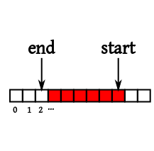
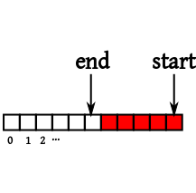

[Home]
Table of contents
Queues are much like stacks, except that insertion occurs at one
end, and removal from the other. These two operations are called,
respectively, enqueue and dequeue. No other
operations are allowed to modify the queue. As before you may
have query methods like size.
EXAMPLE:
Suppose that I start with an empty queue, and issue the commands
nq(1)
nq(5)
nq(3)
dq()
dq()
dq()
dq()
What will be the result?
SOLUTION:
Let's show the queue horizontally, insertion at right, removal from
left:
------
1
------
1 5
------
1 5 3
------
5 3
------
3
------
------
Error: queue underflow!
 Notice that a queue follows the "first-in-first-out" (FIFO)
principle as opposed to the "last-in-first-out" (LIFO) principle
for stack.
If we know an maximum allowable size of the queue, we may use an
array to implement a queue. However, this is slightly more tricky
than implementing a stack. To see why, let's first try to proceed
as we did for a stack. We shall take an array, and use two
indices to mark the start and end of the queue:
Notice that a queue follows the "first-in-first-out" (FIFO)
principle as opposed to the "last-in-first-out" (LIFO) principle
for stack.
If we know an maximum allowable size of the queue, we may use an
array to implement a queue. However, this is slightly more tricky
than implementing a stack. To see why, let's first try to proceed
as we did for a stack. We shall take an array, and use two
indices to mark the start and end of the queue:
|  |
| The red cells belong to the queue |
Notice how end index is one cell behind the red part.
This allows us to represent an empty queue by making start
equal to end. The size of the queue
is end-start. Then we can use the following C
functions to enqueue and dequeue:
int body[100];
void nq(int what) {
if(start==99) {
printf("Queue overflow!");
return;
}
start++;
body[start] = what;
}
int dq() {
if(end==start) {
printf("Queue underflow!");
return;
}
end++;
return body[end];
}
int size() {
return start-end;
}
void dump() {
int i;
for(i=start;i>end;i--)
printf("%d\n", body[i]);
}
Do you see why this is a bad implementation? Consider the
following situation:
|  |
| The white cells are unused |
Now you want to enqueue one more entry. In our implementation,
you'll get an overflow error, yet part of the array is lying
unused! To utilize the trailing white cells, we need a more
clever implementation, where the start and end
indices are allowed to "wrap back" to the beginning. The coding
wil now become confusing unless you update your computational
model to a circular set up:
int body[100];
void nq(int what) {
int proposedStart = (start+1)%100;
if(proposedStart==end) {
printf("Queue overflow!");
return;
}
start = proposedStart;
body[start] = what;
}
EXERCISE:
Update the code for dq() and size()
and dump() appropriately for the circular set up.
All this discussion pertains to the situation where we have a
known maximum allowable size of the queue. If we do not have such
a maximum, then you may use a linked list, as we have already discussed.